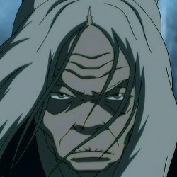

Characters
Katara
Katara is een waterstuurmeester , geboren in de Zuidelijke
Waterstam als zoon van Chief Hakoda en zijn vrouw Kya . Tijdens
haar jeugd was ze de enige waterstuurder die in de Zuidelijke
Waterstam leefde. Nadat ze haar moeder had verloren bij een
inval in de Vuurnatie en haar vader vertrok om tegen de
Vuurnatie te strijden in de Honderdjarige Oorlog , werd ze
opgevoed door haar grootmoeder van vaders kant, Kanna , samen
met haar oudere broer Sokka . Als tiener ontdekten Katara en
haar broer de jonge Air Nomad Avatar , Aang , die al een eeuw
lang bevroren was in een ijsberg met zijn bizons , Appa . Omdat
ze een waterstuurmeester nodig hadden, verlieten de broers en
zussen en Aang de Zuidpool op reis naar de Noordelijke
Waterstam.
Katara en Sokka realiseerden zich dat Aang de Avatar was en
bleven met hem over de hele wereld reizen terwijl hij de
resterende elementen, aarde en vuur, onder de knie kreeg . Ze
werd Aang's waterstuurinstructeur na hun vertrek uit de
Noordelijke Waterstam, ter vervanging van Meester Pakku , die
hen tijdens hun verblijf daar instructies had gegeven. Haar
beheersing van water maakte haar tot een formidabele aanwinst
voor de groep . De hulp van de broers en zussen hielp Aang de
ambities van de Vuurnatie op wereldheerschappij een halt toe te
roepen, een einde te maken aan de eeuwenlange oorlog en
uiteindelijk het evenwicht in de wereld te herstellen.
- Naam: Katara
- Nationaliteit: Zuidelijke Waterstam
- Geslacht: Vrouw
- Kleur haar: Bruin
- Kleur ogen: Blauw
- Leeftijd: 14
- Positie: Beschermer
- Eerste verschijning: De jongen in de IJsberg
- Sturing(en): Water, ijs, bloed
- Wapen(s): Geen
Sokka
Sokka was een Waterstamkrijger van de Zuidelijke Waterstam en de
zoon van Chief Hakoda en Kya . Na de dood van zijn moeder en het
vertrek van zijn vader naar de oorlog , werd Sokka samen met
zijn jongere zus Katara opgevoed door zijn grootmoeder Kanna .
Ondanks zijn wens om zich bij zijn vader te voegen, mocht Sokka
de mannen op de missie niet vergezellen en bleef hij achter.
Omdat er geen andere tienerjongens in de stam waren, was Sokka
de oudste man van zijn dorp en vertrok daarom als leider van de
stam. Hij nam de verantwoordelijkheid voor de stam op zich en
trainde kinderen ongelukkig tot toekomstige krijgers totdat hij
en zijn zus een Luchtnomad ontdekten genaamd Aang , bevroren in
een ijsberg. Toen hij hoorde dat Aang de Avatar was , [10]
was hij aanvankelijk sceptisch of een kind echt de wereld zou
kunnen redden . Terwijl hij en zijn zus Aang hielpen bij zijn
zoektocht, begon hij te geloven dat Aang werkelijk de enige hoop
op vrede in de wereld was.
- Naam: Sokka
- Nationaliteit: Zuidelijke Waterstam
- Geslacht: Man
- Kleur haar: Bruin
- Kleur ogen: Blauw
- Leeftijd: 15
- Positie: Beschermer
- Eerste verschijning: De jongen in de IJsberg
- Sturing(en): Geen
- Wapen(s): Boemerang, "Ruimtezwaard"
Pakku
Pakku was een waterstuurmeester en -instructeur in Noordelijke
stijl die over een enorme vaardigheid en kracht beschikte en
ooit werd beschouwd als de beste waterstuurder ter wereld. [2]
Droog sarcastisch en zeer serieus over zijn kunst, hij was een
harde, maar niettemin effectieve leraar, maar ook een uiterlijk
wrange maar innerlijk zorgzame oude man.
Het grootste deel van zijn leven hield hij zich strikt aan de
tradities van de Noordelijke Waterstam en leerde hij uitsluitend
watersturen aan mannelijke studenten; Maar nadat hij Katara , de
kleindochter van zijn ex-verloofde , had ontmoet , stemde hij
ermee in haar waterstuurmeester te worden toen hij besefte dat
zijn koppige overtuigingen de vrouw van wie hij hield wegdreef.
Na hereniging met en trouwen met Kanna, opende Pakku een school
in de Zuidelijke Waterstam , waar hij zowel mannelijke als
vrouwelijke studenten accepteerde. Vanwege zijn grote
waterstuurvaardigheden en wijsheid was Pakku ook lid van de Orde
van de Witte Lotus en nam hij deel aan de bevrijding van Ba
Sing Se .
- Naam: Pakku
- Nationaliteit: Noordelijke Waterstam
- Geslacht: Man
- Kleur haar: Wit/Grijs
- Kleur ogen: Blauw
- Leeftijd: Ongeveer 80 jaar
- Eerste verschijning: De Watermeester
- Sturing(en): Water en ijs

Naam: Hama
Hama was een waterstuurmeester van de Zuidelijke Waterstam. Ze
was de allerlaatste die door de Vuurnatie werd gevangengenomen
en gevangengezet tijdens de invallen van de Zuidelijke Waterstam
, maar ze ontsnapte door het gebruik van bloedsturen , een
waterstuurtechniek die ze ontwikkelde tijdens haar
gevangenschap. Na haar ontsnapping vluchtte ze naar een klein
stadje in de Vuurnatie, waar ze herbergier werd. Elke volle maan
eiste Hama wraak op de Vuurnatie door dorpelingen uit haar stad
op te sluiten in een berggrot.
In haar jeugd was Hama goede vrienden met Kanna , de grootmoeder
van Sokka en Katara. Hama was jarenlang een van de vele
waterstuurders die in de Zuidelijke Waterstam woonden; Echter,
vóór 40 AG, toen ze een jonge volwassene was, begon de Vuurnatie
de Zuidelijke Waterstam te overvallen en verzwakte systematisch
haar verdediging door waterstuurders te vangen door middel van
hit-and-run-aanvallen.
- Hama
- Nationaliteit: Zuidelijke Waterstam
- Geslacht: Vrouw
- Kleur haar: Wit/Grijs
- Kleur ogen: Blauw
- Leeftijd: Ongeveer 80 jaar
- Eerste verschijning: De Poppenspeler
- Sturing(en): Water, ijs en bloed

Naam: Avatar Kuruk
Kuruk was de Avatar van de Waterstam , die onmiddellijk Avatar
Yangchen en Avatar Kyoshi opvolgde . Afkomstig uit de
Noordelijke Waterstam , was hij een krachtige en begaafde buiger
die ervan droomde de sterfelijke wereld ten goede te veranderen
door de mensen te verenigen en te handelen op basis van de
fundamenten gelegd door Yangchen.
Zijn hoop werd echter de bodem ingeslagen nadat een meedogenloze
confrontatie met een duistere geest resulteerde in een diepe
geestelijke corruptie die in hem begon te woekeren. Deze botsing
was pas de eerste in zijn soort, toen een toenemend aantal
duistere geesten het sterfelijke rijk begonnen binnen te dringen
om vernietiging aan te richten. Om te voorkomen dat anderen
zouden worden getroffen door dezelfde ziekte die hem kwelde,
koos Kuruk ervoor om de toornige wezens herhaaldelijk in zijn
eentje onder ogen te zien. Alleen zijn spirituele mentor,
Nyahitha , wist van de offers en eenzaamheid die hij moest
doorstaan.
- Kuruk
- Nationaliteit: Noordelijke Waterstam
- Geslacht: Man
- Kleur haar: Zwart
- Kleur ogen: Blauw
- Leeftijd: 33 jaar
- Eerste verschijning: De Avatar-staat
- Sturing(en): Water, Lucht, Aarde, Vuur
Element Water
Watersturen
Watersturen , een van de vier elementaire buigkunsten , is het
hydrokinetische vermogen om water in al zijn verschillende
vormen te beheersen. Dit type buiging wordt gebruikt door de
mensen van de Waterstam , die zijn onderverdeeld in de
Zuidelijke , Noordelijke en minder bekende Foggy Swamp- stammen,
evenals die van de Verenigde Republiek , elk met hun eigen
unieke buigstijl.
Water is het element van verandering. [1] De maan is de
krachtbron bij het watersturen, en de oorspronkelijke
waterstuurders leerden buigen door te observeren hoe de maan de
getijden duwde en trok. [2] De Waterstammen zijn de enige mensen
die niet van een dier hebben leren buigen , hoewel de Maan- en
Oceaangeesten in de sterfelijke wereld aan het begin van de
Avatar- wereld de vorm aannamen van koivissen .
Oorsprong
Tijdens het tijdperk van Raava werd de kracht van water voor het
eerst verleend door de waterleeuwenschildpad , die het tijdelijk
zou bieden als bescherming aan degenen die zich in de Spirit
Wilds waagden . Nadat de leeuwenschildpadden echter afstand
deden van hun rol als beschermers van de mensheid tijdens het
tijdperk van de Avatar , weigerden de schildpadden mensen de
macht meer te geven. De afstammelingen van de mensen die bovenop
de waterleeuwenschildpad woonden, leerden uiteindelijk
watersturen door te observeren hoe de maan de getijden van de
oceaan duwde en trok; ze leerden hoe ze het effect zelf konden
simuleren. [2] Als zodanig hebben ze een sterke spirituele
verbinding met de maan en zijn tegenhanger, de oceaan. In feite
is watersturen de enige buigkunst die afkomstig is van geesten
in plaats van van dieren, en bovendien heeft elk nadelig effect
op deze geesten een nadelige invloed op waterstuurders.
Vechtstijl
De kracht van Waterbending is zijn grote veelzijdigheid. In
plaats van een afzonderlijke reeks offensieve methoden te
ondersteunen, maakt watersturen gebruik van defensieve
technieken die kunnen worden omgezet in aanvallen en counters,
en van verdediging in aanval. In plaats van simpelweg een aanval
af te weren, concentreren de defensieve manoeuvres van
watersturen zich op controle, bereikt door de eigen kracht van
een tegenstander tegen hem te keren, in plaats van de
tegenstander direct schade toe te brengen.
 BACK TO TOP
BACK TO TOP